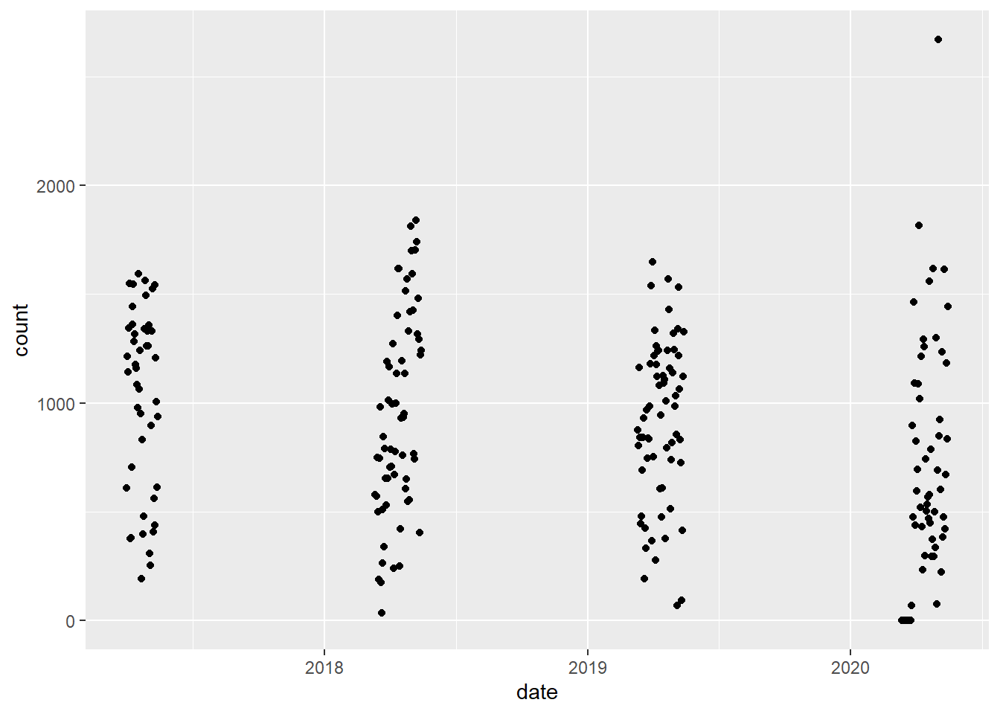

Visualizing Arlington Bikometers
Part 5: Picking Which Bikeometers to Graph
Goal
Determine which Bikeometers to include in our visualization. Bikeometers will be excluded if they are missing data in the time range we are exploring. Bikeometers were also excluded if they were not in the Arlington region.
Import the table
We will start by importing the necessary packages and establishing a connection to the database.
If you’ve been following along with the previous posts, you’ll notice my connection between R and MySQL has changed. Instead of defining every parameter of the odbc connection each time I wanted to connect, I can instead create a DSN from the odbc app in Windows. To read about why I chose a DSN, check out this post
Next, we can use the dplyr function tbl(), pass in the connection object con and the name of the table we want to look at ‘counts_daily’. This will create a ‘lazy table’, importing only the first 10 rows. You can tell the entire table has not been imported because instead of listing the number of rows, it lists: ‘Source: table
# Imports to a lazy table
counts_daily <- tbl(con, 'counts_daily')
counts_daily## # Source: table<counts_daily> [?? x 9]
## # Database: mysql [root@:/bikeometers_db]
## bikeometer_id date direction count is_weekend year month day
## <int> <date> <chr> <chr> <int> <int> <int> <int>
## 1 3 2010-12-08 I 16 0 2010 12 8
## 2 3 2010-12-08 O 96 0 2010 12 8
## 3 3 2010-12-09 I 297 0 2010 12 9
## 4 3 2010-12-09 O 135 0 2010 12 9
## 5 3 2010-12-10 I 189 0 2010 12 10
## 6 3 2010-12-10 O 157 0 2010 12 10
## 7 3 2010-12-11 I 164 1 2010 12 11
## 8 3 2010-12-11 O 122 1 2010 12 11
## 9 3 2010-12-12 I 15 1 2010 12 12
## 10 3 2010-12-12 O 18 1 2010 12 12
## # ... with more rows, and 1 more variable: month_day <chr>The MnDOT combines directions ‘I’ and ‘O’ together so let’s do that now.
Combine I and O values
In order to create our new ‘combined’ table, we want ‘date = 2010-12-08, bikeometer_id=3, direction=I’ combined with ‘date = 2010-12-08, bikeometer_id=3, direction=O’. In order to do this, we will need to group our observations not only by date, but also by bikeometer_id. Remember, there are many observations with date=2010-12-08 as each Bikeometer may have data for that date.
I’ll outline two options to combine the ‘I’ and ‘O’ variables: 1. Using a MySQL Statement 2. Using the R ‘dplyr’ package
MySQL Statement
In MySQL, I’ll create a new view in MySQL that takes the sum of both the ‘I’ and ‘O’ values and group them by ‘date’ and ‘bikeometer_id’.
CREATE OR REPLACE VIEW counts_daily_total AS
SELECT
cd.date AS date,
SUM(cd.count) AS count,
cd.bikeometer_id AS bikeometer_id,
cd.is_weekend AS is_weekend,
cd.month AS month,
cd.day AS day,
cd.year as year,
cd.month_day as month_day
FROM counts_daily cd
GROUP BY cd.date, cd.bikeometer_id;For those not familiar with MySQL views, they look like tables but are actually recalculated each time they are accessed. This is exactly what we want so the view is automatically updated to include the new data as our Python program imports the new Bike Arlington data into my ‘counts_daily’ MySQL table. Thus, we don’t need to change our Python program to generate new tables in MySQL.
R ‘dplyr’
Instead of using MySQL statements, we can use the dplyr package in R. We will pipe our counts_daily table into the group_by() and summarize() functions found in the dplyr package. To combine the ‘I’ and ‘O’ counts we will use the function sum() then just specify the other variables we want to include in our new counts_daily_total table.
Essentially, dplyr translates your code into a MySQL statement. To view the MySQL command that dplyr generates, pipe show_query() to the end of your code.
counts_daily_total <- counts_daily %>%
group_by(date, bikeometer_id) %>%
summarize(count = sum(count), is_weekend = is_weekend,
month = month, day = day, year = year, month_day = month_day) %>%
show_query()## Warning: Missing values are always removed in SQL.
## Use `SUM(x, na.rm = TRUE)` to silence this warning
## This warning is displayed only once per session.## `summarise()` has grouped output by 'date'. You can override using the `.groups` argument.## <SQL>
## SELECT `date`, `bikeometer_id`, SUM(`count`) AS `count`, `is_weekend`, `month`, `day`, `year`, `month_day`
## FROM `counts_daily`
## GROUP BY `date`, `bikeometer_id`counts_daily_total <- counts_daily %>%
group_by(date, bikeometer_id) %>%
summarize(count = sum(count), is_weekend = is_weekend,
month = month, day = day, year = year, month_day = month_day) %>%
collect()## `summarise()` has grouped output by 'date'. You can override using the `.groups` argument.counts_daily_total## # A tibble: 57,928 x 8
## # Groups: date [3,334]
## date bikeometer_id count is_weekend month day year month_day
## <date> <int> <dbl> <int> <int> <int> <int> <chr>
## 1 2010-12-08 3 112 0 12 8 2010 12_8
## 2 2010-12-09 3 432 0 12 9 2010 12_9
## 3 2010-12-10 3 346 0 12 10 2010 12_10
## 4 2010-12-11 3 286 1 12 11 2010 12_11
## 5 2010-12-12 3 33 1 12 12 2010 12_12
## 6 2010-12-13 3 195 0 12 13 2010 12_13
## 7 2010-12-14 3 183 0 12 14 2010 12_14
## 8 2010-12-15 3 187 0 12 15 2010 12_15
## 9 2010-12-16 3 96 0 12 16 2010 12_16
## 10 2010-12-17 3 29 0 12 17 2010 12_17
## # ... with 57,918 more rowsWhether you choose to use a MySQL Statement or ‘dplyr’ you can see the ‘I’ and ‘O’ directions are combined!
To do a quick manual check, we can add the ‘I’ and ‘O’ values for bikeometer_id=3, date=2010-12-08 (16+96=112). Looking at our new table, we can look at the first observation to see that it worked.
Even though it isn’t mentioned in the Bike Arlington documentation, it’s important to account for the ‘A’ direction. When the Bikeometer can’t distinguish between outbound and inbound directions, the direction is classified as ‘A’.
Let’s use Bikeometer 14 as an example and check to make sure our ‘A’ counts have been properly moved over to our table.
counts_daily_a <- counts_daily_total %>% filter(bikeometer_id == '14') %>% collect()
counts_daily_a## # A tibble: 1,597 x 8
## # Groups: date [1,597]
## date bikeometer_id count is_weekend month day year month_day
## <date> <int> <dbl> <int> <int> <int> <int> <chr>
## 1 2012-12-04 14 73 0 12 4 2012 12_4
## 2 2012-12-05 14 105 0 12 5 2012 12_5
## 3 2012-12-06 14 84 0 12 6 2012 12_6
## 4 2012-12-07 14 59 0 12 7 2012 12_7
## 5 2012-12-08 14 96 1 12 8 2012 12_8
## 6 2012-12-09 14 42 1 12 9 2012 12_9
## 7 2012-12-10 14 104 0 12 10 2012 12_10
## 8 2012-12-11 14 91 0 12 11 2012 12_11
## 9 2012-12-12 14 78 0 12 12 2012 12_12
## 10 2012-12-13 14 114 0 12 13 2012 12_13
## # ... with 1,587 more rowsNext, we will confirm that these counts match the counts in the original counts_daily table.
counts_daily_a <- counts_daily %>% filter(bikeometer_id == '14') %>% collect()
counts_daily_a## # A tibble: 1,601 x 9
## bikeometer_id date direction count is_weekend year month day
## <int> <date> <chr> <chr> <int> <int> <int> <int>
## 1 14 2012-12-04 A 73 0 2012 12 4
## 2 14 2012-12-05 A 105 0 2012 12 5
## 3 14 2012-12-06 A 84 0 2012 12 6
## 4 14 2012-12-07 A 59 0 2012 12 7
## 5 14 2012-12-08 A 96 1 2012 12 8
## 6 14 2012-12-09 A 42 1 2012 12 9
## 7 14 2012-12-10 A 104 0 2012 12 10
## 8 14 2012-12-11 A 91 0 2012 12 11
## 9 14 2012-12-12 A 78 0 2012 12 12
## 10 14 2012-12-13 A 114 0 2012 12 13
## # ... with 1,591 more rows, and 1 more variable: month_day <chr>The counts are the same and the only difference is that we lost the direction variable in our counts_daily_total table which we don’t need anymore.
Creating the inital visualizations
This is where our hard work will start to pay off. Let’s use the date’s we chose in Part 1 (March 12 - May 15), pick a Bikeometer (28), and create a graph.
First, we will filter our data. We will pipe our counts_daily_total table into the dplyr:filter function to subset rows using column values.
counts_daily_filtered <- counts_daily_total %>%
filter(date >= '2017-03-12' & date <= '2017-05-15' & bikeometer_id == '28'|
date >= '2018-03-12' & date <= '2018-05-15' & bikeometer_id == '28'|
date >= '2019-03-12' & date <= '2019-05-15' & bikeometer_id == '28'|
date >= '2020-03-12' & date <= '2020-05-15' & bikeometer_id == '28') %>%
print()## # A tibble: 240 x 8
## # Groups: date [240]
## date bikeometer_id count is_weekend month day year month_day
## <date> <int> <dbl> <int> <int> <int> <int> <chr>
## 1 2017-04-01 28 611 1 4 1 2017 4_1
## 2 2017-04-02 28 1213 1 4 2 2017 4_2
## 3 2017-04-03 28 1142 0 4 3 2017 4_3
## 4 2017-04-04 28 1344 0 4 4 2017 4_4
## 5 2017-04-05 28 1548 0 4 5 2017 4_5
## 6 2017-04-06 28 377 0 4 6 2017 4_6
## 7 2017-04-07 28 382 0 4 7 2017 4_7
## 8 2017-04-08 28 705 1 4 8 2017 4_8
## 9 2017-04-09 28 1361 1 4 9 2017 4_9
## 10 2017-04-10 28 1444 0 4 10 2017 4_10
## # ... with 230 more rowsAnother way to do this is to use the dbGetQuery() function in the DBI package. We can pass in the MySQL SELECT statement directly to the dbGetQuery() function along with the connection object to return our desired table.
Using head(my_table), I was able to view the top 6 rows of my_filtered_table directly in R.
sql_cmd <- "SELECT * FROM bikeometers_db.counts_daily WHERE bikeometer_id = 28 AND
date >= '2020-03-12' AND date <= '2020-05-15' ORDER BY count desc"
# creates a lazy table
my_filtered_table <- dbGetQuery(con, sql_cmd)
# displays the top 6 rows
head(my_filtered_table)## bikeometer_id date direction count is_weekend year month day month_day
## 1 28 2020-04-25 O 970 1 2020 4 25 4_25
## 2 28 2020-05-10 O 926 1 2020 5 10 5_10
## 3 28 2020-03-29 O 882 1 2020 3 29 3_29
## 4 28 2020-05-15 O 851 0 2020 5 15 5_15
## 5 28 2020-04-29 O 760 0 2020 4 29 4_29
## 6 28 2020-04-11 O 758 1 2020 4 11 4_11# When you are done, run: dbDisconnect(con)Now we can create a plot! We will pipe our counts_daily_filtered table into the ggplot package, define the aesthetics, and call the geom_point() function to make a scatterplot.
counts_daily_filtered %>% ggplot(aes(date, count)) +
geom_point()
Very cool! Let’s see what the actual highest counts are by sorting the rows by descending ‘counts’.
Order by descending counts
We can use the dplyr function arrange(), specify the variable name (count) and specify to sort in descending order.
counts_daily_filtered %>% arrange(desc(count))## # A tibble: 240 x 8
## # Groups: date [240]
## date bikeometer_id count is_weekend month day year month_day
## <date> <int> <dbl> <int> <int> <int> <int> <chr>
## 1 2020-05-02 28 2669 1 5 2 2020 5_2
## 2 2018-05-08 28 1840 0 5 8 2018 5_8
## 3 2020-04-05 28 1815 1 4 5 2020 4_5
## 4 2018-05-01 28 1812 0 5 1 2018 5_1
## 5 2018-05-09 28 1740 0 5 9 2018 5_9
## 6 2018-05-07 28 1701 0 5 7 2018 5_7
## 7 2018-05-02 28 1699 0 5 2 2018 5_2
## 8 2019-04-01 28 1648 0 4 1 2019 4_1
## 9 2018-04-13 28 1617 0 4 13 2018 4_13
## 10 2018-04-14 28 1617 1 4 14 2018 4_14
## # ... with 230 more rowsIt looks like on May 2, 2020 there were 2669 bikers recorded by Bikeometer 28.
We can also see from the plot that in 2020 there are some dates with 0 bikers recorded. As I’ve chosen to only include Bikometers without missing data, we can eliminate this Bikeometer.
Function to Plot Every Bikeometer
To get a better view of the data, we will need to plot every Bikeometer individually.
From what I’ve read, using ‘for loops’ are slow in R but I haven’t been able to find another way to generate plots for every Bikeometer and Year this easily.
So, we can use a nested for loop to easily generate plots for each counter in the Arlington region and each year from 2017-2021. I’ve commented out all but one Bikeometer ID (28) to only generate plots for one Bikeometer for this post, but to test out the code, you can un-comment the rest of the vector to generate all the plots yourself.
for (id in c(33)){#28,30,24,59,10,20,18,3,58,61,62,14,60,5,6,27,26,8,7,22,21,9,16,15,31,11,2,25,19)){
for (year in c(2017,2018,2019,2020,2021)){
start_date <- paste(year, '-03-12', sep = '', collapse = '-')
end_date <- paste(year, '-05-15', sep = '', collapse = '-')
counts_daily_filtered <- counts_daily_total %>% filter(date >= start_date & date <= end_date & bikeometer_id == id) %>% collect()
p <- counts_daily_filtered %>% ggplot(aes(date, count)) +
geom_point() +
labs(
title = 'Daily Bicycle Counts',
subtitle = paste('Year = ', year, 'ID = ', id)) +
xlab('Date') +
ylab('Counts Daily') +
theme(
plot.title = element_text(hjust = 0.5, vjust = 1),
plot.subtitle = element_text(hjust = 0.5, vjust = -1, size = 10, face = 'italic')
)
print(p)
#ggsave(filename = paste('ID ', id, ' Year ', year,' counts', '.jpg', sep = ''), path = '~/Github/Arlington_Bikeometer_Visualizations/Output', device = 'jpg', dpi = 'retina')
}}
Yes! The plots were generated perfectly. However, our joy is short-lived as we notice big holes in 2019 and 2020 plots.
Missing data or my mistake?
We can see that in 2019 and 2020 there is some missing data. In 2020, there is over a week of 0 counts and in 2019 the counts are just missing.
When I manually queried the Bike Arlingon web interface for the 2020 dates, there is data in their database with count=0.
However, for the 2019 missing dates, there was no data available.

If I were to recreate my database of counts, I would include a clause ‘if there is no data to import for a time-point, count = 0’. The Bike Arlington people probably have a similar clause, which probably prevents the web interface from breaking when a valid query is made but no data is in the server.
Choosing the Bikeometers
After confirming that the missing data wasn’t in the database and looking through the plots of each Bikeometer, I found these Bikeometers without missing data: 14,15,16,18,22,31,39.
Filling in the missing data?
The MnDOT released their data quality management procedures in Minnesota’s Walking and Bicycling Data Collection Report Update. Here, they list how they remove outliers, review suspicious data points, create a linear regression model, and use said regression model to estimate daily traffic for missing days. In the future, I’d like to perform a similar analysis to fill in the missing data.
The next post will be about creating the geom_area plot that matches the MnDOT’s plot.